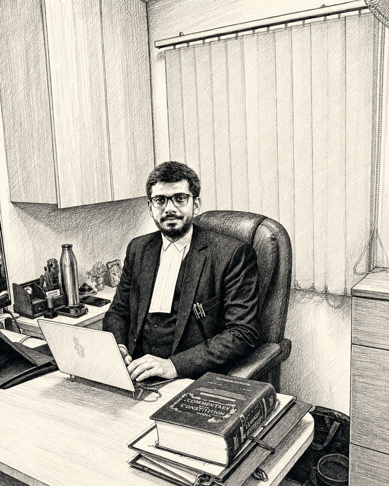
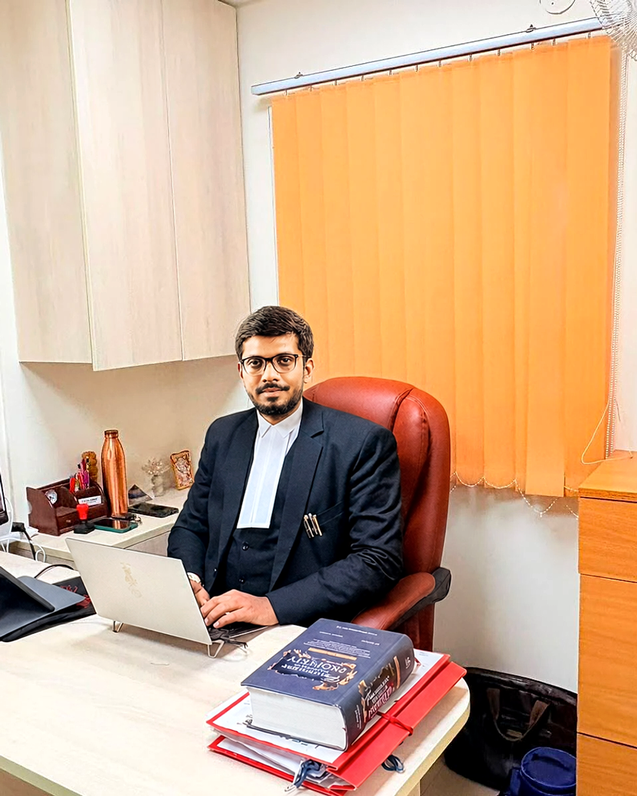

Arbitration. Civil Litigation. Criminal Law.
Chambers of
Aayushmaan Vatsyayana
Nominated/Standing Counsel
About the Chambers
Aayushmaan Vatsyayana appears in arbitration and alternative dispute resolution, corporate and commercial matters, writ and constitutional petitions, civil litigation, and criminal law cases. He represents clients before the Supreme Court of India, the Central Administrative Tribunal in Delhi, the Delhi High Court, various District and Sessions Courts in East, North West, and New Delhi, and the Debt Recovery Tribunal in Delhi.
Aayushmaan Vatsyayana holds the designation of Nominated/Standing Counsel and has appeared before the Supreme Court of India, Central Administrative Tribunal Delhi, Delhi High Court, District and Sessions Courts at Karkardooma, Rohini, and Patiala House, as well as the Debt Recovery Tribunal in Delhi.

The Mind Behind the Strategy
Aayushmaan Vatsyayana
Nominated/Standing Counsel
His practice encompasses civil litigation, criminal law, service law, arbitration and alternative dispute resolution, banking and debt recovery, writ and constitutional petitions, and appeals before the Supreme Court. He appears in matters including special leave petitions, criminal appeals, civil appeals, transfer petitions, contempt petitions, original applications, and review petitions across forums such as the Supreme Court, Central Administrative Tribunal, Delhi High Court, District and Sessions Courts in Delhi, and the Debt Recovery Tribunal.
Aayushmaan Vatsyayana appears in civil litigation including contempt petitions, original applications, and review petitions before the Supreme Court and the Central Administrative Tribunal in Delhi. He handles criminal matters such as special leave petitions, criminal appeals, and miscellaneous applications before the Supreme Court and Delhi High Court. His practice also covers service law, arbitration cases before District & Sessions Judges, banking and debt recovery matters at the Debt Recovery Tribunal, and writ petitions before the Supreme Court. He engages in various stages including filing petitions, notices, replies, arguments, and orders across multiple forums in Delhi.
Practice Areas
Aayushmaan Vatsyayana represents clients in civil litigation, criminal law, service law, arbitration and alternative dispute resolution, banking and debt recovery, writ and constitutional matters, Supreme Court appeals and special leave petitions, and commercial recovery. His practice spans several forums including the Supreme Court of India, High Court of Delhi, Central Administrative Tribunal, various District and Sessions Courts, and the Debt Recovery Tribunal in Delhi.
His recorded matters include Special Leave Petitions in both civil and criminal domains, civil and criminal appeals, transfer petitions, contempt petitions, original applications, miscellaneous applications, review petitions, arbitration cases, and civil suits. These matters arise under statutes such as the Code of Civil Procedure, Indian Contract Act, Arbitration and Conciliation Act, Constitution of India, and the Bharatiya Nyaya Sanhita among others.
Aayushmaan appears before the Supreme Court of India, High Court of Delhi, Central Administrative Tribunal, District and Sessions Courts across Delhi, Patiala House Courts, and the Debt Recovery Tribunal. His practice covers disputes involving service laws, property transfer, specific relief, succession, narcotic drugs, consumer protection, and commercial contracts.

Practice Details
Areas of Practice
Civil Litigation
Aayushmaan Vatsyayana appears in civil litigation matters including Special Leave Petitions, civil appeals, transfer petitions, review petitions, civil suits, and curative petitions. His work includes contempt petitions and original applications before the Supreme Court of India and the Central Administrative Tribunal in Delhi, as well as proceedings before the District and Sessions Judge at Patiala House Courts. These matters involve statutes such as the Code of Civil Procedure, Limitation Act, and Indian Contract Act.
Criminal Law
He handles criminal law matters including Special Leave Petitions, criminal appeals, miscellaneous criminal applications, and transfer petitions. His appearances are recorded before the Supreme Court of India and the High Court of Delhi, representing petitioners and complainants. These matters are governed by the Bharatiya Nyaya Sanhita, Bharatiya Nagarik Suraksha Sanhita, and Bharatiya Sakshya Adhiniyam.
Service Law
Aayushmaan represents clients in service law matters through original applications before the Central Administrative Tribunal in Delhi. His practice covers issues related to appointment, probation, suspension, dismissal, promotion, seniority, and other service-related disputes.
Arbitration & ADR
His arbitration practice includes arbitration cases before the District and Sessions Judge at Rohini Court, Delhi. These matters fall under the Arbitration and Conciliation Act and the Code of Civil Procedure.
Banking & Debt Recovery (DRT)
He appears in securitisation applications before the Debt Recovery Tribunal, Delhi-1, handling matters related to banking and debt recovery.
Writ & Constitutional
Aayushmaan handles writ petitions before the Supreme Court of India involving constitutional issues governed by the Constitution of India.
Supreme Court Appeals & SLPs
He appears in Special Leave Petitions, civil appeals, and transfer petitions before the Supreme Court of India, representing clients in appellate matters.
Commercial Recovery
His commercial recovery practice involves civil suits before the District and Sessions Judge, Delhi, dealing with matters under the Indian Contract Act, Specific Relief Act, and Companies Act.
Courts & Jurisdiction
Supreme Court of India
Aayushmaan Vatsyayana appears in Special Leave Petitions and Criminal Appeals, as well as Transfer Petitions and Special Leave Petitions in civil matters before the Supreme Court of India. His practice here covers criminal law, civil litigation, and writ and constitutional matters.
Central Administrative Tribunal, Delhi
He represents clients in Miscellaneous Applications and Original Applications before the Central Administrative Tribunal in Delhi, focusing on service law matters.
High Court of Delhi
Vatsyayana appears in criminal miscellaneous matters before the High Court of Delhi, engaging with the criminal law practice area.
District & Sessions Judge, East, Karkardooma Court
He appears before the District & Sessions Judge at Karkardooma Court, East District, Delhi, handling matters within his practice scope.
District & Sessions Judge, New Delhi, Patiala House Courts
His practice includes civil suits before the District and Sessions Judge at Patiala House Courts, New Delhi, within the civil litigation domain.
District & Sessions Judge, North West, Rohini Court
Vatsyayana appears in arbitration cases before the District & Sessions Judge at Rohini Court, North West Delhi, working within arbitration and alternative dispute resolution.
Debt Recovery Tribunal, Delhi-1
He represents matters involving securitisation applications before the Debt Recovery Tribunal, Delhi-1, focusing on banking and debt recovery.
Matters & Proceedings
Supreme Court Civil Matters
Aayushmaan Vatsyayana appears in Special Leave Petitions, Civil Appeals, Transfer Petitions, Review Petitions, and Miscellaneous Applications within civil litigation before the Supreme Court of India in New Delhi. He also represents clients in Contempt Petitions before this court.
Supreme Court Criminal Matters
His practice includes Special Leave Petitions, Criminal Appeals, Transfer Petitions, and related Miscellaneous Applications in criminal law before the Supreme Court of India, New Delhi.
High Court Criminal Proceedings
He appears in Criminal Miscellaneous matters before the High Court of Delhi, Delhi, involving various aspects of criminal law.
Central Administrative Tribunal
Aayushmaan Vatsyayana handles Original Applications and Miscellaneous Applications before the Central Administrative Tribunal, Delhi, focusing on service law matters.
District Courts Civil Litigation
His work includes Civil Suits before the District and Sessions Judge at Patiala House Courts, New Delhi, categorized under commercial civil matters.
Arbitration Cases
He represents parties in Arbitration Cases before the District and Sessions Judge at North West, Rohini Court, Delhi, under arbitration proceedings.
Legal & Statutory Framework
Civil Procedure and Contracts
His civil litigation practice involves the Code of Civil Procedure, 1908, the Limitation Act, 1963, and the Indian Contract Act, 1872.
Criminal Law Statutes
Criminal law matters in his practice are governed by the Bharatiya Nyaya Sanhita, 2023, the Bharatiya Nagarik Suraksha Sanhita, 2023, and the Bharatiya Sakshya Adhiniyam, 2023.
Arbitration Law
Arbitration and related dispute resolution matters fall under the Arbitration and Conciliation Act, 1996.
Constitutional Law
His work in writ and constitutional matters involves the Constitution of India.
Commercial Recovery
Commercial recovery proceedings in his practice are governed by the Specific Relief Act, 1963, and the Companies Act, 2013.
Roles & Responsibilities
Civil Litigation
Represents parties in contempt petitions, original applications, and review petitions before the Supreme Court and the Central Administrative Tribunal, Delhi, managing pleadings, notices, and arguments.
Criminal Law
Acts for petitioners and complainants in special leave petitions, criminal appeals, and miscellaneous criminal applications before the Supreme Court and Delhi High Court.
Service Law
Engages in service law matters, representing clients in relevant proceedings.
Arbitration & ADR
Handles arbitration cases before the District & Sessions Judge, overseeing petitions, notices, replies, and hearings.
Banking & Debt Recovery
Appears in banking and debt recovery matters before the Debt Recovery Tribunal, managing procedural stages and hearings.
Professional Contact
Integrity, Expertise, Trust, Discretion